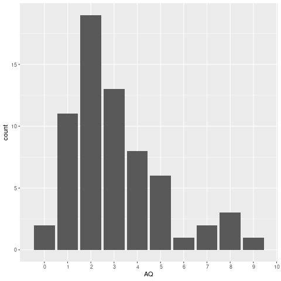

Scoring the AQ-10: Hints and solutions
Scoring the AQ
As a hint, your solution will involve reshaping using a tidyr function and joining tables using one of the two-table verbs in dplyr.
First, load in the packages we will need for data processing and visualization.
library("tidyverse")
Now load in the data itself.
## read in the data dat <- read_csv("sm_data.csv", skip = 1)
Note that we have used the argument “skip = 1” because for some reason, Survey Monkey left the first line blank. Let’s have a glimpse():
glimpse(dat)
Error in glimpse(dat) : object 'dat' not found
Pull out participant information
The table has a mix of information: participant demographics and responses to survey items. We want to have separate tables for these. Next step: pull out the participant information into a separate table called part_info.
## pull out participant information part_info <- dat %>% select(Id, Gender, Age, Participate)
Error in select(., Id, Gender, Age, Participate) : object 'dat' not found
Reshape the question data
Now let’s reshape the question data (columns Q1 to Q10) from wide to
long, and store this in the variable qdat.
qdat <- dat %>% select(Id, Q1:Q10) %>% gather("Question", "Response", Q1:Q10) %>% arrange(Id, Question) qdat
Deal with the reverse coding
Now let’s create our tables that link responses to scores for the two different formats. There are different possible solutions to this.
Note that the scoring does not depend on whether the response is “Definitely” or “Slightly”; only on whether it is “Agree” or “Disagree”. For items 1, 7, 8, 10, you give one point for Agree and zero for Disagree; for the other items, it is the reverse. Probably the easiest thing to do is to separate the response into two variables “Slightly/Definitely” and “Agree/Disagree”, and then use either if_else() or case_when() to handle the different cases.
The cases where we assign Score to 1 are:
(Question %in% c("Q1", "Q7", "Q8", "Q10")) & (Agreement == "Agree")
!(Question %in% c("Q1", "Q7", "Q8", "Q10")) & (Agreement == "Disagree")
Every other case is assigned to zero. We will use case_when() to do this inside of a mutate() function, to assign the result to our new variable, Score. With case_when(), you specify each condition using the syntax:
condition ~ value
With the last line, TRUE ~ value to assign the ’default’ value when no other condition holds.
See ?case_when for examples.
The boolean & is true when both of its arguments are true.
The logic of the second case reads: “it is not the case that Question was one of Q1, Q7, Q8, or Q10, and agreement is disagree”.
scored <- qdat %>% separate(Response, c("Degree", "Agreement")) %>% mutate(Score = case_when((Question %in% c("Q1", "Q7", "Q8", "Q10")) & (Agreement == "Agree") ~ 1L, !(Question %in% c("Q1", "Q7", "Q8", "Q10")) & (Agreement == "Disagree") ~ 1L, TRUE ~ 0L)) scored
Error in separate(., Response, c("Degree", "Agreement")) :
object 'qdat' not found
Error: object 'scored' not found
Type the response categories (Response), question format, i.e, forward or reverse (Format: 1 or 2), and scores directly into a tibble(). You can then join the question table to this lookup table on the keys Format and Response.
## table link format to response score rscores <- tibble(Format = rep(1:2, each = 4), Response = rep(c("Definitely Agree", "Slightly Agree", "Slightly Disagree", "Definitely Disagree"), times = 2), Score=c(1, 1, 0, 0, 0, 0, 1, 1))
Let’s have a look:
rscores
Format Response Score 1 1 Definitely Agree 1 2 1 Slightly Agree 1 3 1 Slightly Disagree 0 4 1 Definitely Disagree 0 5 2 Definitely Agree 0 6 2 Slightly Agree 0 7 2 Slightly Disagree 1 8 2 Definitely Disagree 1
Now let’s make a table linking each question to format number (1 or 2).
## table linking question to format qformats <- data_frame(Question = paste0("Q", 1:10), Format = c(1, 2, 2, 2, 2, 2, 1, 1, 2, 1))
Let’s have a look at this.
qformats
Question Format 1 Q1 1 2 Q2 2 3 Q3 2 4 Q4 2 5 Q5 2 6 Q6 2 7 Q7 1 8 Q8 1 9 Q9 2 10 Q10 1
OK, now we’re ready to score each individual question by linking qdat to rscores by way of qformats.
scored <- qdat %>% inner_join(qformats, "Question") %>% inner_join(rscores, c("Format", "Response"))
Error in inner_join(., qformats, "Question") : object 'qdat' not found
If everything goes correctly, we should have the same number of rows in scored as we had in qdat. The next line is just to formally test that this is the case, using stopifnot(). This will cause the program to halt if the condition is not satisfied.
stopifnot(nrow(scored) == nrow(qdat))
Error in nrow(scored) : object 'scored' not found
We should always double check that our scoring system worked. We can do this using count(). We should never have a case for Q1, Q7, Q8, or Q10 where Disagree is scored as 1; likewise, for the other questions, we should never have a case where Agree is scored as 1. We can see that this is in fact the situation:
scored %>% count(Question, Response, Score)
Error in count(., Question, Response, Score) : object 'scored' not found
Calculate the AQ
The final thing to do is to calculate the AQ, which is the sum of the 1s for each Id (because each unique value of Id stands in for a unique participant).
A hint here is to use group_by() and summarise().
Use group_by(Id) %>% summarise(AQ = sum(Score)), and pipe the result into arrange, so the participants with the highest AQ scores show up at the top. The final result gets stored in AQ_scores.
AQ_scores <- scored %>% group_by(Id) %>% summarise(AQ = sum(Score)) %>% arrange(desc(AQ))
Error in group_by(., Id) : object 'scored' not found
AQ_scores
Error: object 'AQ_scores' not found
Plot
Our last task was to generate a histogram using ggplot2.
ggplot(AQ_scores, aes(AQ)) + geom_bar() + scale_x_discrete(limits = 0:10)

Merge with participant information
We probably want to link the AQ scores back to participant info (since, for example, we’d want to contact participants with particularly high AQs). To do this you need to use a join.
part_AQ <- inner_join(AQ_scores, part_info, "Id")
head(part_AQ, 10)
Error in head(part_AQ, 10) : object 'part_AQ' not found
Created: 2021-04-07 Wed 22:47